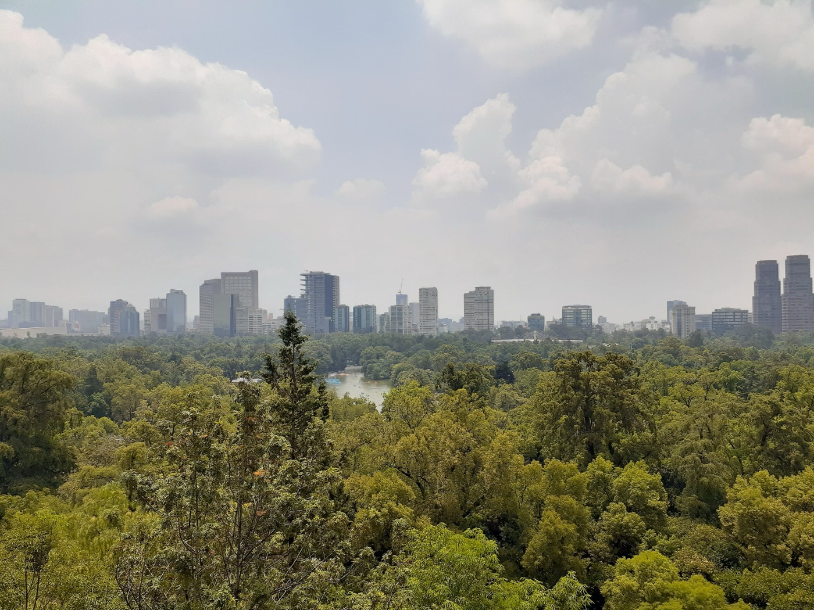
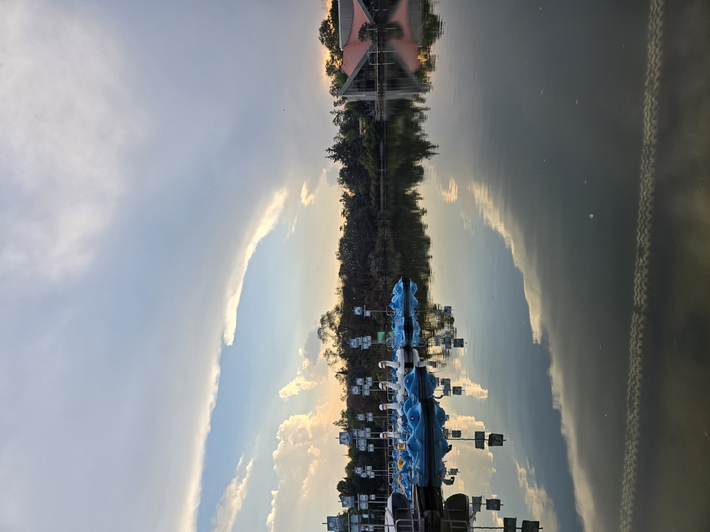
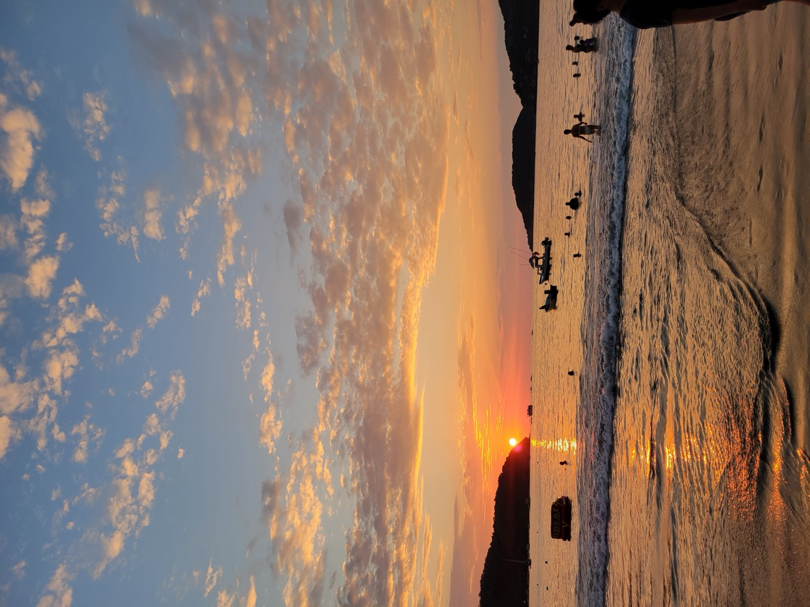
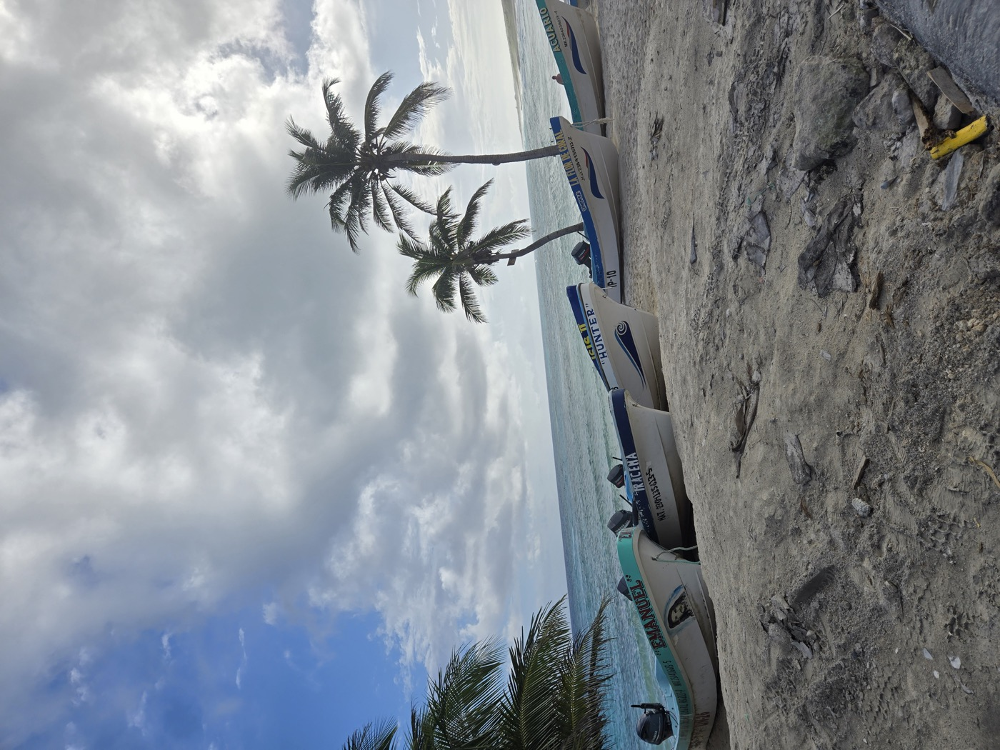
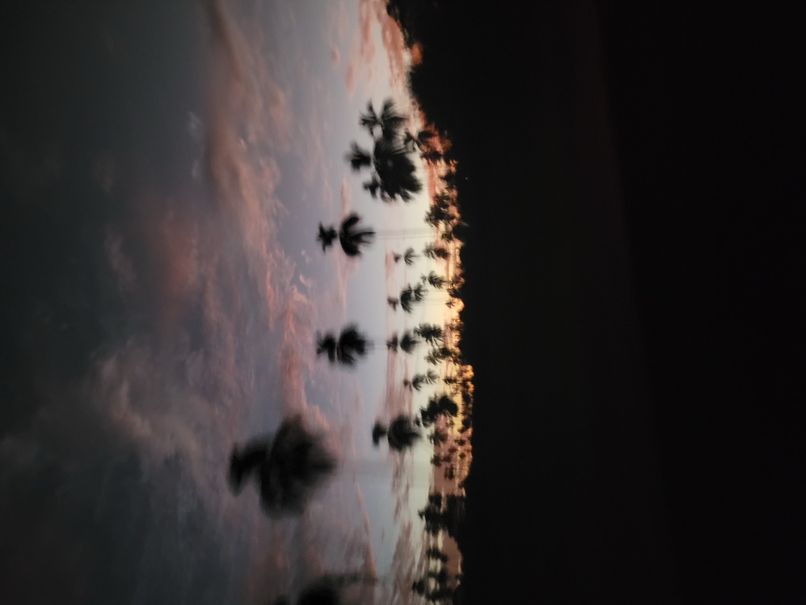
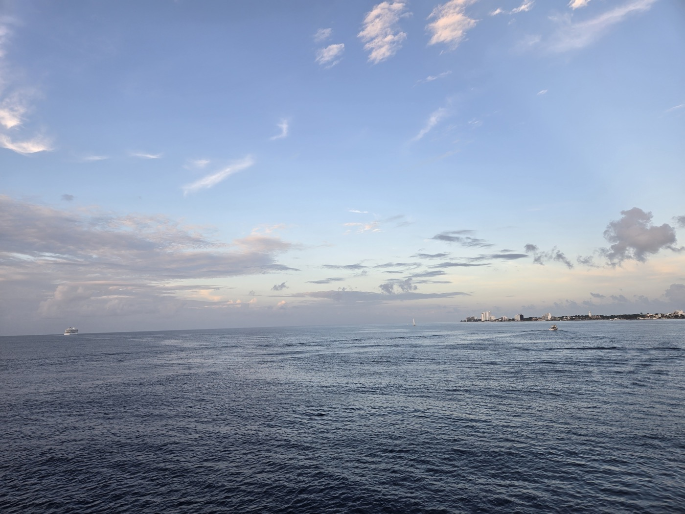

Mexico City
A personal guide to Mexico City — favorite tacos, neighborhoods to walk, museums, day trips, and a few honest tips — plus a handful of favorite places around Mexico. I am always happy to talk CDMX over coffee.
Starter tip: Don’t go crazy on the food on day one. La maldición de Moctezuma es real.






🌮 Favorite Tacos
- El Remolkito — absolute favorite
- Tacos Orinoco — gentrified but still solid
- El Califa — always good, consistent
- Los Parados — classic and satisfying
Centro Histórico
Must-sees
- Cathedral & Templo Mayor — built atop Aztec ruins. Visit the archaeological site behind the cathedral and grab an elote nearby; they’re excellent.
- Palacio de Bellas Artes — beautiful, and a great example of how parts of the city are slowly sinking (Mexico City was built on a lake).
Where to eat
- Sanborns de los Azulejos — traditional, fair prices, pretty building.
- Azul Histórico — slightly touristy but delicious. Try Chiles en Nogada if available.
- Café La Ópera — historic and often recommended.
Avoid traffic by leaving before 6:00 PM.
Reforma & Chapultepec
- Paseo de la Reforma — iconic avenue, ideal for walking.
- Angel of Independence — national monument.
- Chapultepec Castle & Park — a large green space with museums, lakes, and a historic castle.
- Museum of Natural History — also inside the park.
Where to eat
- SAMOS at the Ritz — rooftop, great view, upscale but not outrageous.
- Bishara — a local spot I like in Colonia Cuauhtémoc.
- El Bajío — reliable option for classic Mexican food.
Roma, Condesa & Polanco
These neighborhoods are perfect for walking, day or night — beautiful, safe, and vibrant.
Highlights
- Lincoln Park (Polanco) — chic and peaceful.
- Mercado Roma — upscale food court.
- La Rotonda (Condesa) — cozy café & restaurant area.
- Soumaya Museum — stunning from the outside; a quick photo stop is enough.
- Antara Fashion Hall — shopping + restaurants.
Breakfast
- 100% Natural — healthy
- El Bajío — traditional Mexican
- Los Canarios — a bit pricier, but very nice
Lunch & Dinner
- Villa Rica — seafood
- El Japonez — sushi
- Las Hijas de la Tostada — seafood
Coyoacán & San Ángel
- Frida Kahlo Museum — must-see if you’re into art/history.
- Coyoacán Center — charming area to walk. Skip breakfast here; overpriced.
- San Ángel — walk from Pizzería Cancino toward ITAM for a real neighborhood vibe.
- Café Ruta de la Seda — excellent pastries and coffee.
- San Ángel Inn — a bit upscale, but lovely for breakfast.
Xochimilco (optional)
- Ride a colorful trajinera boat with snacks and music. Fun and Instagram-worthy.
🛕 Teotihuacán Pyramids
- Worth a day trip. Take a tour if you want historical context, or catch a bus — and go early!
🌄 Small-Town Day Trips (pick one)
- Tepoztlán — hike to El Tepozteco and walk around the town.
- Malinalco — small mountain town, pretty and peaceful.
- San Miguel de Allende — a bit far, but stunning. Go during Día de Muertos if possible.
Safety & Getting Around
- Safest areas: Polanco, Condesa, Roma, Reforma, Juárez.
- Avoid: Tepito, Doctores, Buenos Aires, and parts near the City Center at night.
- Getting around: Metrobús is efficient; the Metro is safe but crowded; Uber is best — avoid regular taxis.
- Rush hours: avoid travel from 8–10 AM and 6–8 PM.
- Currency exchange: airport rates are surprisingly good.
- Rooftop dining: always a win in CDMX’s mild weather.